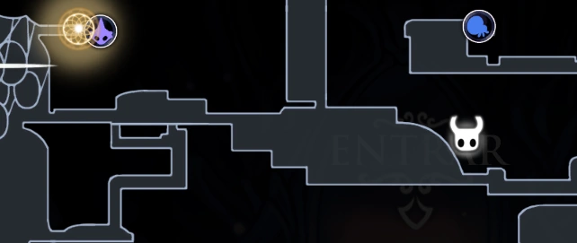

Amuleto sedoso contendo uma música de despedida, deixada pelas Tecelãs que partiram de Hallownest para sua antiga casa. Invoca pequenas tecelãs para dar ao portador solitário um pouco de companheirismo e proteção.

Canção Das Tecelãs
Para encontrar o amuleto você irá passar por um Devoto espreitador e u
ma Pequena tecelã.
Ao passar dos 2 Você terá que quebrar uma pequena parede e assim chegar
no Covil Das Tecelãs.
Após entrar no Covil Das Tecelãs você irá seguir em frente e Subir, após
subir vire para a esquerda e passe pelos espinhos.
Assim você irá encontrar o Amuleto entre 2 Tecelãs.
